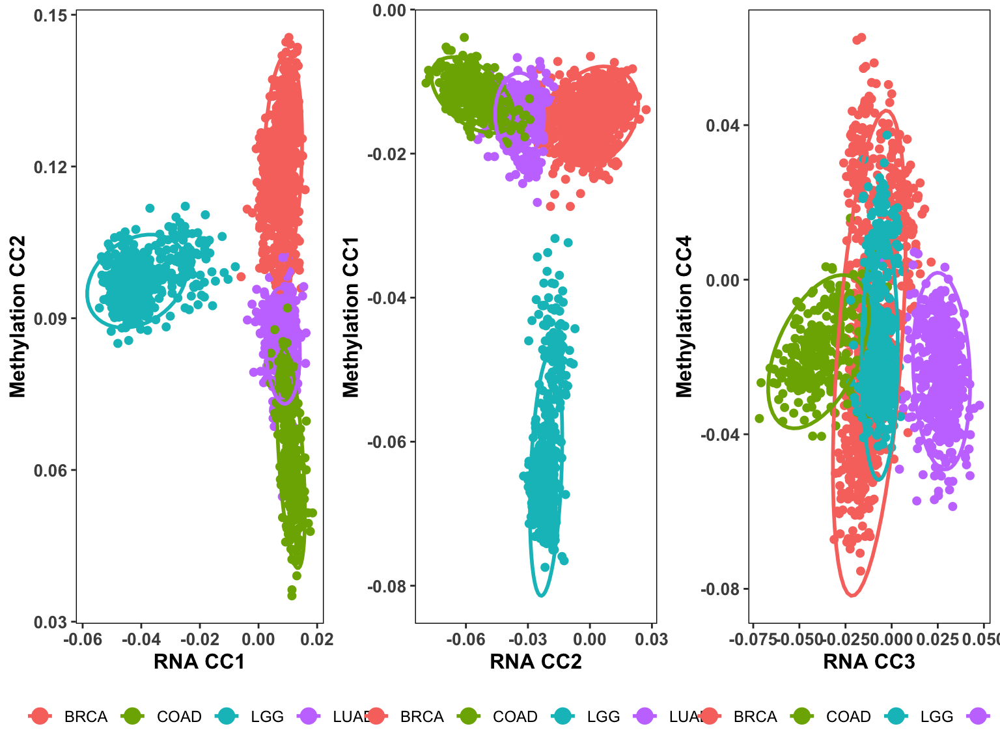

# Check and install BDStatMethExamples if needed
if (!require("BDStatMethExamples", quietly = TRUE)) {
if (!require("devtools", quietly = TRUE)) {
install.packages("devtools")
}
devtools::install_github("dpelegri/BDStatMethExamples")
}
# Load required packages
library(BDStatMethExamples)
library(BigDataStatMeth)
library(rhdf5)
library(tidyverse)
library(ggplot2)
library(gridExtra)Implementing CCA
Canonical Correlation Analysis for Multi-Omic Integration
1 Overview
Canonical Correlation Analysis (CCA) identifies coordinated relationships between two high-dimensional datasets by finding linear combinations that maximize correlation. In multi-omic studies, CCA reveals how different molecular layers interact—for instance, how gene expression patterns relate to DNA methylation profiles. This workflow demonstrates CCA on real TCGA cancer data, showing how methylation and expression coordinate across different cancer types.
Unlike pairwise correlation analyses that examine individual feature relationships, CCA discovers the fundamental patterns linking entire datasets. Think of it as finding the “canonical” dimensions where methylation and expression vary together most strongly. This workflow uses the bdCCA_hdf5() function from BDStatMethExamples to perform block-wise CCA on data stored in HDF5 format, enabling analysis of datasets too large for memory.
1.1 What You’ll Learn
By the end of this workflow, you will:
- Import multi-omic data directly from URLs into HDF5 format
- Use
bdCCA_hdf5()from BDStatMethExamples for block-wise CCA - Understand how block-wise processing enables large-scale CCA
- Extract canonical correlations, coefficients, and sample scores
- Visualize canonical variates colored by biological groups
- Interpret CCA results in the context of cancer biology
- Identify which canonical components separate cancer types
- Use CCA results stored in HDF5 for downstream analyses
2 Prerequisites
2.1 Install and Load Packages
Check if BDStatMethExamples is already installed to avoid reinstalling:
3 The Dataset
We’ll analyze matched methylation and RNA-seq data from TCGA (The Cancer Genome Atlas):
- Dataset X (RNA-seq): 2,171 samples × 500 gene expression values
- Dataset Y (Methylation): Same 2,171 samples × 339 CpG methylation sites
- Metadata: Cancer type labels for each sample
- Source: TCGA multi-cancer study
- Goal: Identify methylation-expression patterns that differ by cancer type
The data represents multiple cancer types (BRCA, LUAD, KIRC, COAD, PRAD), allowing us to see if canonical variates capture cancer-specific molecular signatures. Samples are pre-matched—row order is identical in both datasets, ensuring correct sample alignment for CCA.
4 Step 1: Import Data to HDF5
4.1 Download and Import RNA-seq Data
The bdImportData_hdf5() function downloads, extracts, and imports data directly from a URL:
# Base URL for TCGA CCA example data
filecommon <- paste0("https://raw.githubusercontent.com/isglobal-brge/",
"Supplementary-Material/master/Pelegri-Siso_2025/",
"application_examples/CCA/data/")
# RNA-seq expression data URL
Xfile <- paste0(filecommon, "RNA_data_small.zip")
# Import RNA data as X matrix in HDF5 file
impX <- bdImportData_hdf5(
inFile = Xfile,
destFile = "cca_tcga_small.hdf5",
destGroup = "data",
destDataset = "X",
header = TRUE,
rownames = FALSE,
sep = ",",
overwrite = TRUE,
overwriteFile = TRUE
)cat("✓ RNA-seq data imported\n")✓ RNA-seq data importedcat(" Dimensions:", impX$dims[1], "samples ×", impX$dims[2], "genes\n") Dimensions: samples × genesThe function automatically: 1. Downloads RNA_data_small.zip from GitHub 2. Extracts the CSV file 3. Imports into HDF5 at /data/X 4. Cleans up temporary files
4.2 Import Methylation Data
Add methylation data to the same HDF5 file:
# Methylation data URL
Yfile <- paste0(filecommon, "Methyl_data_small.zip")
# Import methylation as Y matrix (same file, different dataset)
impY <- bdImportData_hdf5(
inFile = Yfile,
destFile = "cca_tcga_small.hdf5",
destGroup = "data",
destDataset = "Y",
header = TRUE,
rownames = FALSE,
sep = ",",
overwrite = TRUE,
overwriteFile = FALSE # Don't overwrite file, just add dataset
)cat("✓ Methylation data imported\n")✓ Methylation data imported# Verify both datasets are in the file
h5ls("cca_tcga_small.hdf5") group name otype dclass dim
0 / data H5I_GROUP
1 /data .X_dimnames H5I_GROUP
2 /data/.X_dimnames 2 H5I_DATASET COMPOUND 500
3 /data .Y_dimnames H5I_GROUP
4 /data/.Y_dimnames 2 H5I_DATASET COMPOUND 339
5 /data X H5I_DATASET FLOAT 2171 x 500
6 /data Y H5I_DATASET FLOAT 2171 x 339
NoteSample Matching in Pre-Prepared Data
The TCGA datasets used here have been pre-processed to ensure sample alignment. Rows in the RNA-seq matrix correspond exactly to rows in the methylation matrix by position. Sample names are not stored in these files—alignment is by row order.
In your own analyses, always verify: - Same samples present in both datasets - Identical sample order - No missing or duplicated samples
Misaligned samples produce mathematically valid but biologically meaningless CCA results.
5 Step 2: Perform CCA
5.1 Understanding CCA Parameters
The bdCCA_hdf5() function performs CCA using block-wise QR decomposition:
- filename: HDF5 file containing both X and Y datasets
- X, Y: Paths to datasets within the file (e.g., “data/X”, “data/Y”)
- m: Number of blocks for QR decomposition
- bcenter: Center data by column means (default TRUE)
- bscale: Scale by standard deviations (default FALSE)
- overwriteResults: Overwrite existing CCA results (TRUE for reanalysis)
- keepInteResults: Keep intermediate QR steps for inspection
5.2 Run CCA with Block-Wise Processing
# Number of blocks for processing
m <- 4
# Perform CCA
bdCCA_hdf5(
filename = "cca_tcga_small.hdf5",
X = "data/X",
Y = "data/Y",
m = m,
bcenter = TRUE,
bscale = FALSE,
overwriteResults = TRUE,
keepInteResults = TRUE
)Dataset has been splitted, results can be found in Step1/Xrows/X
XRt dataset has been recomposed from blocks
Dataset has been splitted, results can be found in Step4/splitted/XRt.Q
XQ dataset has been recomposed from blocks
Dataset has been splitted, results can be found in Step1/Yrows/Y
YRt dataset has been recomposed from blocks
Dataset has been splitted, results can be found in Step4/splitted/YRt.Q
YQ dataset has been recomposed from blockscat("✓ CCA complete\n")✓ CCA completecat("Results stored in /Results/ group\n")Results stored in /Results/ group# Examine output structure
h5ls("cca_tcga_small.hdf5") group name otype dclass dim
0 / NORMALIZED H5I_GROUP
1 /NORMALIZED data H5I_GROUP
2 /NORMALIZED/data X H5I_DATASET FLOAT 2171 x 500
3 /NORMALIZED/data Y H5I_DATASET FLOAT 2171 x 339
4 /NORMALIZED/data mean.X H5I_DATASET FLOAT 500 x 1
5 /NORMALIZED/data mean.Y H5I_DATASET FLOAT 339 x 1
6 /NORMALIZED/data sd.X H5I_DATASET FLOAT 500 x 1
7 /NORMALIZED/data sd.Y H5I_DATASET FLOAT 339 x 1
8 / Results H5I_GROUP
9 /Results .xcoef_dimnames H5I_GROUP
10 /Results/.xcoef_dimnames 1 H5I_DATASET COMPOUND 500
11 /Results .ycoef_dimnames H5I_GROUP
12 /Results/.ycoef_dimnames 1 H5I_DATASET COMPOUND 339
13 /Results cor H5I_DATASET FLOAT 1 x 1
14 /Results xcenter H5I_DATASET FLOAT 500 x 1
15 /Results xcoef H5I_DATASET FLOAT 500 x 339
16 /Results xscores H5I_DATASET FLOAT 2171 x 339
17 /Results ycenter H5I_DATASET FLOAT 339 x 1
18 /Results ycoef H5I_DATASET FLOAT 339 x 339
19 /Results yscores H5I_DATASET FLOAT 2171 x 339
20 / SVD H5I_GROUP
21 /SVD CrossProd_XQ_YQ H5I_GROUP
22 /SVD/CrossProd_XQ_YQ d H5I_DATASET FLOAT 1 x 339
23 /SVD/CrossProd_XQ_YQ u H5I_DATASET FLOAT 500 x 339
24 /SVD/CrossProd_XQ_YQ v H5I_DATASET FLOAT 339 x 339
25 / data H5I_GROUP
26 /data .X_dimnames H5I_GROUP
27 /data/.X_dimnames 2 H5I_DATASET COMPOUND 500
28 /data .Y_dimnames H5I_GROUP
29 /data/.Y_dimnames 2 H5I_DATASET COMPOUND 339
30 /data X H5I_DATASET FLOAT 2171 x 500
31 /data Y H5I_DATASET FLOAT 2171 x 339The function internally:
- Normalizes X and Y (centers by column means)
- Splits each matrix into m blocks by rows
- Computes QR decomposition on each block
- Merges block QR results hierarchically
- Computes cross-product of Q matrices (Q_X^T Q_Y)
- Performs SVD to extract canonical correlations
- Solves for canonical coefficients from QR factors
- Computes canonical variates (sample scores)
All intermediate steps (Step1-Step7) are preserved because keepInteResults = TRUE, allowing you to inspect the block-wise computation if needed.
TipChoosing the Number of Blocks (m)
For this dataset (2,171 samples × 500 and 339 features): - m = 4: Good balance of memory and speed - Larger m: Reduces memory usage but increases computation time - Smaller m: Faster but requires more memory
For genome-wide data (50,000 samples × 500,000 features), increase to m = 8-16.
6 Step 3: Load Metadata and Results
6.1 Load Sample Metadata
Metadata contains cancer type labels for visualizing results:
# Load metadata with cancer type annotations
urlfile <- paste0("https://raw.githubusercontent.com/isglobal-brge/",
"Supplementary-Material/master/Pelegri-Siso_2025/",
"application_examples/CCA/data/metadata.csv")
metadata <- read.csv(urlfile)cat("✓ Metadata loaded\n")✓ Metadata loadedcat(" Samples:", nrow(metadata), "\n") Samples: 2171 cat(" Cancer types:\n") Cancer types:print(table(metadata$cancer))
BRCA COAD LGG LUAD
868 296 530 477 The metadata contains: - Sample identifiers - Cancer type labels (BRCA, LUAD, KIRC, COAD, PRAD) - Additional clinical variables
6.2 Extract CCA Results
Load canonical correlations and sample scores from the HDF5 file:
# Open HDF5 file
h5f <- H5Fopen("cca_tcga_small.hdf5")
# Extract canonical correlations matrix
cor <- as.data.frame(h5f$Results$cor)
# Get dimension names for labeling
dimnames_labels <- (h5f$Results$.xcoef_dimnames$`1`)[1:dim(cor)[1], 1]
colnames(cor) <- dimnames_labels
rownames(cor) <- dimnames_labels
# Extract X canonical variates (RNA scores)
xscores <- as.data.frame(h5f$Results$xscores)
colnames(xscores) <- sprintf("CCAX_%s", seq(1:dim(xscores)[2]))
# Extract Y canonical variates (methylation scores)
yscores <- as.data.frame(h5f$Results$yscores)
colnames(yscores) <- sprintf("CCAY_%s", seq(1:dim(yscores)[2]))
# Close HDF5 file
h5closeAll()cat("✓ CCA results extracted\n")✓ CCA results extractedcat("\n X scores dimensions:", dim(xscores)[1], "×", dim(xscores)[2], "\n")
X scores dimensions: 2171 × 339 cat(" Y scores dimensions:", dim(yscores)[1], "×", dim(yscores)[2], "\n") Y scores dimensions: 2171 × 339
NoteUnderstanding Canonical Correlations
The diagonal of the cor matrix contains canonical correlations: - First value: Strongest correlation between X and Y patterns - Subsequent values: Progressively weaker correlations - Typically only first 3-5 components are interpretable
For this TCGA data, expect correlations around 0.6-0.8 for the first component, representing coordinated methylation-expression patterns across cancer types.
7 Step 4: Visualize Canonical Variates
7.1 Combine Data for Plotting
Merge canonical variates with metadata to color points by cancer type:
# Combine metadata with canonical scores
full_data <- cbind(metadata, xscores, yscores)cat("✓ Data prepared for plotting\n")✓ Data prepared for plottingcat(" Combined dimensions:", dim(full_data)[1], "×", dim(full_data)[2], "\n") Combined dimensions: 2171 × 682 7.2 Define Plot Theme for Screen Display
Create theme optimized for on-screen viewing (smaller text than PNG export):
screen_theme <- theme(
axis.text = element_text(size = 10, face = "bold"),
axis.title = element_text(size = 12, face = "bold"),
legend.background = element_blank(),
legend.key = element_blank(),
legend.position = "bottom",
legend.text = element_text(size = 9),
panel.background = element_rect(fill = "white", colour = "black"),
strip.background = element_blank(),
plot.background = element_blank(),
panel.grid = element_blank(),
legend.title = element_blank()
)7.3 Create Canonical Variate Scatter Plots
Generate three plots showing different canonical component pairs:
# Plot 1: CCAX_1 vs CCAY_2
p1 <- full_data %>%
ggplot(aes(x = CCAX_1, y = CCAY_2, color = as.factor(cancer))) +
geom_point(size = 1.8) +
stat_ellipse(linewidth = 1) +
screen_theme +
guides(colour = guide_legend(override.aes = list(size = 4))) +
labs(x = "RNA CC1", y = "Methylation CC2")
# Plot 2: CCAX_2 vs CCAY_1
p2 <- full_data %>%
ggplot(aes(x = CCAX_2, y = CCAY_1, color = as.factor(cancer))) +
geom_point(size = 1.8) +
stat_ellipse(linewidth = 1) +
screen_theme +
guides(colour = guide_legend(override.aes = list(size = 4))) +
labs(x = "RNA CC2", y = "Methylation CC1")
# Plot 3: CCAX_3 vs CCAY_4
p3 <- full_data %>%
ggplot(aes(x = CCAX_3, y = CCAY_4, color = as.factor(cancer))) +
geom_point(size = 1.8) +
stat_ellipse(linewidth = 1) +
screen_theme +
guides(colour = guide_legend(override.aes = list(size = 4))) +
labs(x = "RNA CC3", y = "Methylation CC4")cat("✓ Plots created\n")✓ Plots created7.4 Display Combined Figure
Show the three plots side-by-side on screen:
# Display on screen
grid.arrange(p1, p2, p3, nrow = 1)
The resulting figure shows: - Left panel (CCAX_1 vs CCAY_2): Primary RNA expression pattern vs. secondary methylation pattern - Middle panel (CCAX_2 vs CCAY_1): Secondary RNA pattern vs. primary methylation pattern
- Right panel (CCAX_3 vs CCAY_4): Tertiary patterns in both omics
Ellipses around each cancer type reveal: - Which cancer types cluster together (similar molecular profiles) - Which canonical components best separate cancer types - Whether methylation or expression drives cancer-specific patterns
ImportantInterpreting the Canonical Variate Plots
Each point represents one sample, colored by cancer type. Ellipses show 95% confidence regions for each cancer.
What the axes mean: - CCAX_n: RNA expression canonical variate n (linear combination of genes) - CCAY_n: Methylation canonical variate n (linear combination of CpG sites)
What to look for: - Separated ellipses: Cancer types with distinct molecular profiles - Overlapping ellipses: Cancer types with similar profiles - Component pairs: Different components capture different biological patterns
If BRCA separates clearly in panel 1 but not panel 2, the first canonical components capture BRCA-specific methylation-expression coordination.
8 Step 5: Extract Feature Contributions
8.1 Identify Top Contributing Features
To understand which genes and CpG sites drive the canonical patterns, examine the canonical coefficients:
# Open file to get coefficients
h5f <- H5Fopen("cca_tcga_small.hdf5")
# X coefficients (gene contributions)
xcoef <- as.data.frame(h5f$Results$xcoef)
colnames(xcoef) <- sprintf("CC%s", 1:ncol(xcoef))
# Get gene names from dimnames
gene_names <- h5f$data$.X_dimnames$`2`[, 1]
rownames(xcoef) <- gene_names
# Y coefficients (CpG contributions)
ycoef <- as.data.frame(h5f$Results$ycoef)
colnames(ycoef) <- sprintf("CC%s", 1:ncol(ycoef))
# Get CpG names from dimnames
cpg_names <- h5f$data$.Y_dimnames$`2`[, 1]
rownames(ycoef) <- cpg_names
H5Fclose(h5f)# Find top contributors to first canonical component
cat("\nTop 10 genes for CC1:\n")
Top 10 genes for CC1:xcoef$feature <- rownames(xcoef)
x_top <- xcoef[order(abs(xcoef$CC1), decreasing = TRUE), ]
print(head(x_top[, c("feature", "CC1")], 10)) feature CC1
ACTRT2 ACTRT2 5.278068e-04
ACTL7A ACTL7A 4.320488e-04
ACTRT1 ACTRT1 -2.620451e-04
AADACL4 AADACL4 -2.498018e-04
ADAD1 ADAD1 -2.382528e-04
ACSM4 ACSM4 1.946739e-04
ACTL9 ACTL9 1.878009e-04
ADAM3A ADAM3A -1.686120e-04
ACCSL ACCSL -1.316626e-04
AFM AFM -8.923667e-05cat("\nTop 10 CpG sites for CC1:\n")
Top 10 CpG sites for CC1:ycoef$feature <- rownames(ycoef)
y_top <- ycoef[order(abs(ycoef$CC1), decreasing = TRUE), ]
print(head(y_top[, c("feature", "CC1")], 10)) feature CC1
cg00009970 cg00009970 -0.02123091
cg00010659 cg00010659 -0.02119275
cg00020297 cg00020297 -0.02038494
cg00011247 cg00011247 0.02036400
cg00019809 cg00019809 0.02032894
cg00004072 cg00004072 -0.01805912
cg00003784 cg00003784 0.01743918
cg00013410 cg00013410 0.01644359
cg00009412 cg00009412 0.01501612
cg00016156 cg00016156 -0.01408071High absolute coefficients indicate features that contribute strongly to the canonical variate. These features are candidates for: - Pathway enrichment analysis - Genomic region analysis (for CpG sites) - Mechanistic follow-up studies
9 Interactive Exercise
9.1 Practice: Exploring CCA Results
Understanding CCA output helps you apply it effectively to your own multi-omic data.
# Exercise 1: Try different numbers of blocks
# Re-run CCA with m = 2, m = 8
# How does computation time change?
# Do canonical correlations differ?
bdCCA_hdf5("cca_tcga_small.hdf5", "data/X", "data/Y",
m = 2, overwriteResults = TRUE)
bdCCA_hdf5("cca_tcga_small.hdf5", "data/X", "data/Y",
m = 8, overwriteResults = TRUE)
# Exercise 2: Explore intermediate results
# keepInteResults = TRUE saved Step1-Step7
# What's in each step?
h5ls("cca_tcga_small.hdf5")
# Browse Step1 through Step7 to see block-wise computation
# Exercise 3: Create additional plots
# Try other canonical component pairs
# Which components best separate specific cancer types?
p4 <- full_data %>%
ggplot(aes(x = CCAX_1, y = CCAY_1, color = as.factor(cancer))) +
geom_point(size = 1.8) +
stat_ellipse(linewidth = 1) +
screen_theme
grid.arrange(p4)
# Exercise 4: Examine more features
# Look at top 50 genes and CpGs
# Do biological pathways emerge?
TipReflection Questions
1. Block-Wise Processing: - Why does m = 4 work well for this dataset? - What would happen if m = 1 (no blocking)? - When would you need m = 16?
2. Canonical Components: - Why plot CCAX_1 vs CCAY_2 instead of CCAX_1 vs CCAY_1? - What does it mean if cancer types separate in CC1 but not CC2? - How many components should you examine?
3. Biological Interpretation: - Which cancer types cluster together? Why might that be? - Do RNA patterns or methylation patterns better separate cancers? - How would you validate top contributing genes/CpGs?
4. Method Limitations: - CCA finds correlations—does this mean causation? - What if samples weren’t pre-matched? - Could batch effects produce apparent CCA patterns?
5. Next Steps: - How would you use canonical scores for classification? - What other multi-omic combinations could you analyze? - When would you need regularized CCA instead?
These questions guide thoughtful application of CCA beyond following the workflow mechanically.
10 Key Takeaways
Let’s consolidate what you’ve learned about applying CCA to multi-omic cancer data.
10.1 Essential Concepts
Block-wise processing makes large-scale CCA tractable. The TCGA dataset used here (2,171 samples × 500 and 339 features) could fit in memory, but the same bdCCA_hdf5() function scales to genome-wide data (50,000 samples × 500,000 features) that would overwhelm traditional CCA implementations. By splitting matrices into blocks, computing QR decomposition on each block, and merging results hierarchically, block-wise CCA achieves identical mathematical results to full-matrix CCA but with dramatically reduced memory requirements. The m parameter controls this trade-off—larger m means smaller memory footprint but longer computation time.
Sample alignment is critical but often pre-handled. CCA correlates row i of X with row i of Y—if samples are mis-ordered, you’re correlating patient A’s expression with patient B’s methylation. The TCGA datasets used here have been pre-processed to ensure alignment by row position. In your own analyses, verify sample matching before running CCA. Many published datasets provide pre-aligned matrices; if not, explicitly match samples by identifier and reorder matrices accordingly. One misalignment invalidates the entire analysis, and CCA won’t warn you—it will happily find “patterns” in the noise.
Canonical components capture different biological patterns. The first canonical component (CC1) represents the strongest coordinated methylation-expression pattern across all samples. Subsequent components capture progressively weaker, orthogonal patterns. Plotting different component pairs (CCAX_1 vs CCAY_2, CCAX_2 vs CCAY_1, etc.) reveals that different biological signatures emerge in different components. In the TCGA cancer data, specific cancer types may separate clearly in some component pairs but not others, suggesting those components capture cancer-type-specific molecular coordination. Not all components are biologically meaningful—typically only the first 3-5 warrant interpretation.
Ellipse separation indicates molecular heterogeneity. In the canonical variate plots, well-separated ellipses for different cancer types indicate those cancers have distinct methylation-expression coordination patterns. Overlapping ellipses suggest similar molecular profiles. This visualization is powerful for exploratory analysis—it reveals which cancer types share common regulatory mechanisms (overlapping) versus having unique signatures (separated). If BRCA and LUAD separate in the first component pair but KIRC and COAD overlap, this suggests BRCA and LUAD have distinctive methylation-expression relationships while KIRC and COAD share common patterns.
Canonical coefficients identify key molecular features. High absolute coefficients indicate features (genes or CpG sites) that contribute strongly to the canonical variate. These aren’t necessarily the features with highest individual variance or correlation—CCA identifies features whose coordinated patterns across datasets drive the canonical relationship. For the top-loading genes, pathway enrichment analysis reveals which biological processes are coordinated with methylation. For top CpG sites, genomic region analysis shows which regulatory elements are involved. These features are mechanistic starting points for understanding the biology underlying the CCA patterns.
HDF5 storage preserves all results for downstream use. Unlike traditional CCA that returns objects in R’s workspace, bdCCA_hdf5() stores everything in the HDF5 file—canonical correlations, coefficients, sample scores, and intermediate steps. This enables reproducible analyses where you can return to the file months later and extract exactly what you need without re-running CCA. Other tools can read HDF5 files (Python, MATLAB, command-line tools), making results accessible across computational environments. The structured HDF5 format also documents the analysis provenance through its hierarchical organization.
10.2 When to Use CCA
Understanding when block-wise HDF5 CCA provides value versus when simpler approaches suffice guides effective multi-omic analysis.
✅ Use bdCCA_hdf5() when:
Data too large for memory - When loading both X and Y matrices simultaneously causes memory errors, block-wise processing becomes essential. For TCGA-scale analyses (thousands of samples, hundreds of thousands of features),
bdCCA_hdf5()enables CCA that would otherwise be impossible.Multi-cancer or multi-condition studies - When exploring how molecular coordination varies across biological groups (cancer types, developmental stages, treatment responses), CCA can reveal group-specific patterns that univariate analyses miss. The canonical variate plots with group coloring immediately show which conditions have distinct versus shared molecular signatures.
Integrating matched multi-omic datasets - When you have methylation + expression, CNV + expression, proteomics + transcriptomics, or other paired omics from the same samples, CCA identifies the coordinated dimensions of variation. This is CCA’s primary strength—finding relationships between high-dimensional paired datasets.
Exploratory multi-omic analysis - When you don’t have a specific hypothesis about which features relate but want to discover the main patterns of coordination, CCA provides unsupervised dimensionality reduction that respects the relationship between datasets. It’s often a first step before more targeted analyses.
❌ Simpler approaches work better when:
Data fits in memory comfortably - If R’s
cancor()runs without issues, use it. Base R CCA is simpler, better documented, and integrates with more packages. Only add HDF5 complexity when memory constraints force it.You want specific feature-feature relationships - If the question is “which CpGs correlate with which genes,” compute pairwise correlations with FDR correction. CCA answers “how do CpG profiles relate to gene profiles as coordinated patterns,” which is different. For feature-level relationships, pairwise approaches are more interpretable.
Sample size is small - With 50 samples and 10,000 features per dataset, CCA will overfit dramatically. You need many more samples than features in either dataset for stable CCA. With small samples, reduce features first (through filtering, pathway aggregation, or supervised selection) or use regularized CCA methods.
Datasets aren’t biologically linked - If analyzing brain methylation from one cohort and liver expression from a different cohort, CCA will find correlations (it always does), but they won’t reflect biology. CCA requires matched samples measuring different aspects of the same biological system.
You need causal inference - CCA identifies correlation, not causation. If your scientific question requires understanding whether methylation regulates expression or vice versa, you need causal inference methods (Mendelian randomization, perturbation studies, longitudinal data) not CCA.
The key principle: use block-wise HDF5 CCA when you have large, matched multi-omic datasets and want to discover coordinated patterns across conditions. For smaller data, specific relationships, or causal questions, other approaches are more appropriate.
11 Next Steps
Understand the implementation:
- CCA Implementation in R - How bdCCA_hdf5() works internally
- CCA Implementation in C++ - Performance optimization
Extend this analysis:
- Perform pathway enrichment on top-loading genes
- Map top CpG sites to genomic regions and regulatory elements
- Use canonical scores as features for cancer type classification
- Test which canonical components predict survival outcomes
Advanced CCA topics:
- Sparse CCA for automatic feature selection
- Regularized CCA for high-dimensional settings (p >> n)
- Kernel CCA for capturing nonlinear relationships
- Multi-block CCA for integrating >2 omics types
12 Cleanup
# Close any open HDF5 connections
h5closeAll()
# Note: All CCA results remain in cca_tcga_small.hdf5
# Accessible for downstream analyses without re-running CCA